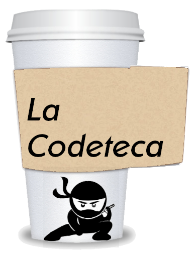

La Codeteca surgió en 2013 como un lugar dónde compartir pequeñas "pildoras" de código ( lo que ahora conocemos popularmente como Snippets o Gist dependiendo de si eres más de gitlab o de github ). Era un sitio picado desde 0 en PHP "puro", sin ningún tipo de framework ni desarrollo previo en el que basarse. Por lo que la gestión, de usuarios, conexión a base de datos, visualización (no, tampoco usaba bootstrap) y demás partes que la componian eran 100% hechos desde 0. Estaba empenzando, y en aquel momento todo aquello parecia buena idea...
Con el tiempo aprendes que si algo lo haces 100% desde 0, también lo tienes que mantener 100% desde cero. Y que todos los días surgen vulnerabilidades, actualizaciones en distintos elementos que usas (bases de datos, lenguajes, la forma en que los navergadores interpretan las etiquetas...) que suponen te obligan a estar continuamente mejorando, cambiando o incluso rehaciendo tu código. Y esto, por lo general, tarde o temprano, te lleva a una de estas dos opciones: o asumes que te has casado con ese código y vives por y para él o terminas abando el proyecto, con los riesgos que eso supone además en materia de seguridad.
En mi caso ocurrió lo segundo. Estaba inmerso en otro proyectos cómo Trastejant o NaMi, trabajando en varias empresas, aprendiendo cosas nuevas... no tenia tiempo para estar continuamente toqueteando aquí o allá, y con el tiempo la codeteca se fue degradando, como un edificio en el que ya nadie vive y ya nadie cuida. Un día era un aviso de funciones no soportadas por la nueva versión de PHP, otro la base de datos diciendo que tal o tal cosa que estas usando esta deprecada, luego algún elemento que la versión X de css ya no dibuja igual... poco a poco, ese lugar que con tanta ilusión emprendí y tantas horas me supuso iba agonizando, poco a poco, sumiendose en el silencio de internet como un barco que poco a poco se sumerge en el mar.
Ahora, con unos años más de experiencia y algunas lecciones aprindadas decido retomar la codeteca, sin grandes pretensiones, sin enormes planes de futuro y crecimiento para ella, solamente como un lugar dónde compartir algunas cosas que he aprendido, noticias que me llamen la atención, y si, aquellos pedacitos de código que a mi me han salvado alguna vez y que pienso que pueden ser utiles para más gente.
Sin más historia, bienvenidos a la versión 2.0 de La Codeteca.